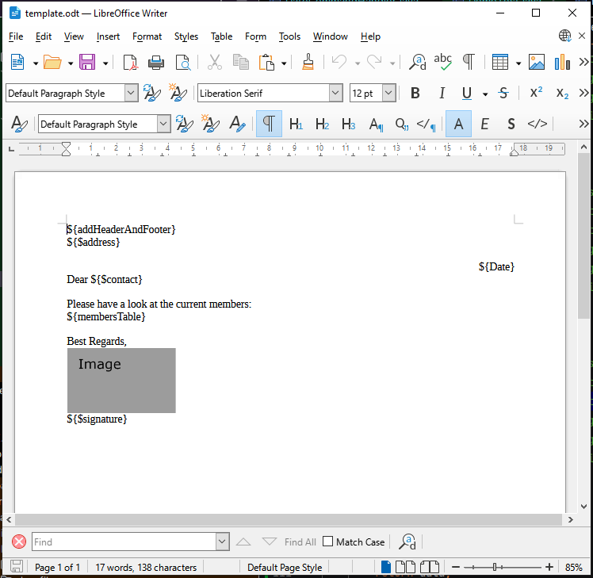

Welcome to
Underdocx is an extendable open source framework to manipulate ODT Documents
(LibreOffice / OpenOffice). It is a template engine and
uses different types of placeholders that can be
found and replaced by custom texts, images, tables and other documents.
Also documents can be converted to PDF if LibreOffice has been installed.

For more Details how ti use Underdocx visit the User Guide. When LibreOffice is installed and LIBREOFFICE environment variable is set correctly you
can also generate a PDF:
When LibreOffice is installed and LIBREOFFICE environment variable is set correctly you
can also generate a PDF:

The Source Code is hosted at GitHub.
Releases are provided by Maven Central Repository.
This documentation and more information can be found at Underdocx.org
Imprint and Privacy Statement of Underdocx.org
Getting Started
Visit Getting Started to include Underdocx into your project.For more Details how ti use Underdocx visit the User Guide.
Demo
Here is an example to load and manipulate a LibreOffice document with multiple placeholders. Some of these placeholders stand for simple texts, other represent an other document that shall be imported. Images can also represent placeholders that shall be exchanged:
This code snipped reads the template document above and replaces the placeholders with data
// Prepare document and engine
OdtContainer doc = new OdtContainer(is);
DefaultODTEngine engine = new DefaultODTEngine(doc);
// Alias placeholders
engine.registerStringReplacement("addHeaderAndFooter", "${Export $resource:\"master\"} ");
engine.registerStringReplacement("membersTable", "${Import $resource:\"membersTable\"} ");
// Variables / Data
engine.pushLeafVariable("membersTable", readResource("membertable.odt"));
engine.pushLeafVariable("master", readResource("master.odt"));
engine.pushLeafVariable("signatureImage", readResource("signature.png"));
engine.pushVariable("persons", createPersonsData());
engine.pushVariable("address", "Mr. Peter Silie\nKochstrasse 42\n38106 Braunschweig");
engine.pushVariable("contact", "Mr. Silie");
engine.pushVariable("signature", "Jon Sutton");
// Execute the engine
engine.run();
doc.save(os);doc.writePDF(pos);Further Information
Underdocx is free and uses the MIT License.The Source Code is hosted at GitHub.
Releases are provided by Maven Central Repository.
This documentation and more information can be found at Underdocx.org
Imprint and Privacy Statement of Underdocx.org